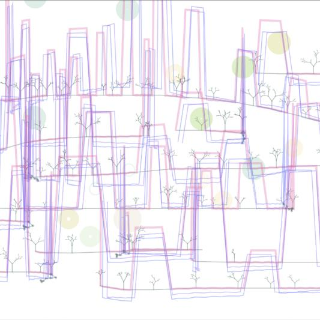

Video
Video from this Memory
Images

首先我抽象出是建筑为简单线条。然后由于街道的形成与道路有关，所以我将用户鼠标的路径作为道路。p5js获得鼠标经过的点集，将这些点集连接以形成道路，并在点集中点位置生成树，每个树都使用递归方法生成。建筑可以通过更改生成的建筑的近似高度和宽度来更改其形状。
在生成建筑时，保存每栋建筑屋顶的位置，在此位置上更改x/y数值以随机更新一个新位置。然后在新位置上生成随机的不同图案，以实现霓虹圆圈或者马赛克的记忆模糊效果。通过不同的效果和随机生成的街道，视频从记忆中城市的模糊效果变成了现代城市的清晰画面。这是唤起人们对这座城市记忆的一种方式。无论时间过去了多久，当我们看到熟悉的街道和建筑时，我们都会想起过去。